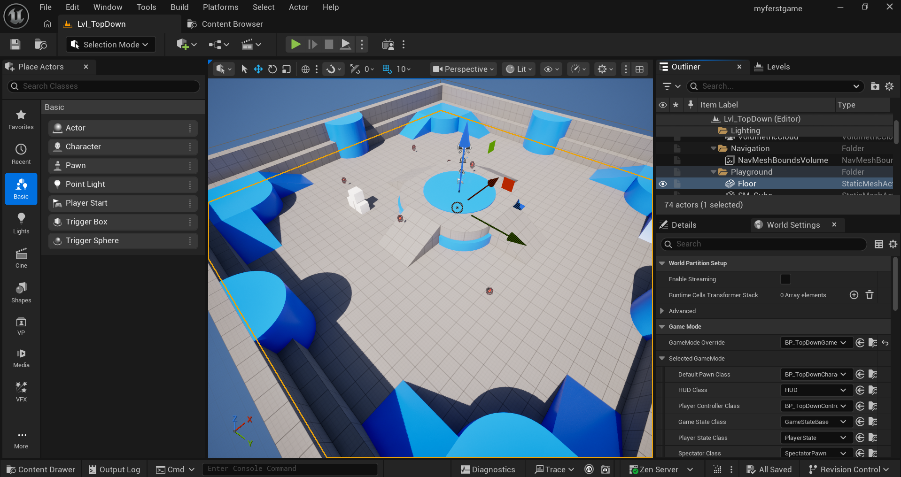
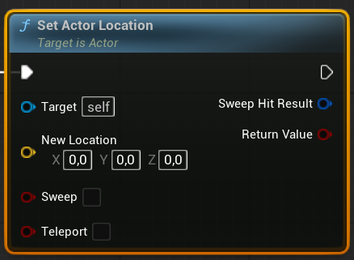
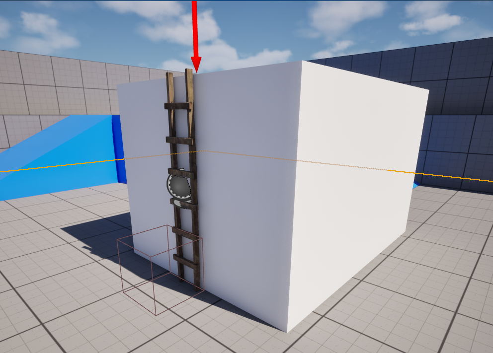

Podstawowe kształty
Sześcian, kula, walec i inne proste bryły pomagają szybko zbudować szkic poziomu.
Unreal Engine - materiały dla kursantów
Poznajemy podstawy edytora Unreal Engine i uczymy się rozmieszczać obiekty na poziomie. Następnie za pomocą Blueprintów tworzymy pierwsze mechaniki: drabinę działającą jak teleport oraz prosty portal. Przy okazji dowiadujemy się, czym są zdarzenia, nody i zmienne.
Podstawowym obiektem, który możemy umieścić na poziomie, jest Actor. Aktorem może być światło, kamera, element otoczenia, drzwi albo portal.

Sześcian, kula, walec i inne proste bryły pomagają szybko zbudować szkic poziomu.
Źródła światła budują wygląd sceny, a kamery pozwalają zaplanować widok gracza.
Obszary wyzwalające zdarzenia oraz efekty wizualne i dźwięki ożywiają poziom.
Logikę gry możemy tworzyć za pomocą wizualnego systemu programowania Blueprint. Zamiast wpisywać kod, łączymy nody — bloczki wykonujące określone zadania.
Określa zasady rozgrywki, warunki zwycięstwa oraz domyślne klasy postaci i kontrolera używane na poziomie.
Odbiera polecenia konkretnego gracza, zarządza sterowanym obiektem i może obsługiwać interfejs użytkownika.
Reprezentuje sterowany obiekt. Character to rodzaj Pawna przygotowany do poruszania postacią.
Przechowuje logikę jednego poziomu, na przykład uruchomienie sekwencji po wejściu do sali.
Najlepsze miejsce na logikę obiektu, który chcemy wielokrotnie umieszczać na scenie, np. BP_Door.
Przechowuje dane potrzebne również po zmianie poziomu, na przykład ustawienia lub stan rozpoczętej rozgrywki.
W unreal engine nie widać rozszeżeń plików, dlatego istnieje konwencja nazewnicza wykorzystujaca prefixy.
BP_Door.
WBP_MainMenu.
SM_Table.
SK_Hero.
M_Wood.
MI_Wood_Dark.
T_Brick_D.
Więcej przykładów znajdziesz w zaleceniach dotyczących nazewnictwa zasobów.
Zdarzenie uruchamia fragment logiki, gdy wydarzy się określona sytuacja: rozpocznie się gra, gracz naciśnie klawisz albo wejdzie w obszar kolizji.
Box Collision.Pojedynczy bloczek w Blueprintach nazywamy nodem. Nody mają piny, za pomocą których łączymy ścieżkę wykonania oraz przekazujemy dane.

Białe piny ze strzałkami określają kolejność uruchamiania połączonych nodów.
Kolorowe, okrągłe piny przekazują wartości. Lewa strona zwykle przyjmuje dane niezbedne do uruchomienia node, a prawa zwraca wynik np. wynik obliczen które wykonał node.
Tworzymy prostą drabinę działającą jak teleport. Gdy gracz wejdzie w obszar kolizji, zostanie od razu przeniesiony na górę. Takie rozwiązanie sprawdza się, gdy wspinanie nie wymaga osobnej animacji i pełnej mechaniki ruchu.

Czesem w programach komputerowych potrzebujemy jakies informacje zapisać sobie na później.
Zmienne to nazwane pojemniki na informacje, które gra musi zapamiętać, na przykład „drzwi są otwarte”,
„gracz ma pięć jabłek” albo „piotrek ma klucz”.
Nazwa zmiennej powinna jasno informować, co przechowuje, np. IsDoorOpen lub
AppleCount.
Typ zmiennej określa, jakiego rodzaju wartości możemy w niej przechowywać np. prawda/fałsz, tekst, liczbe, wskazanie na aktora.
Wartość True albo False, na przykład informacja, czy drzwi są otwarte.
Liczba całkowita, na przykład liczba zebranych jabłek.
Liczba z częścią dziesiętną, na przykład pozostały czas: 12.5 sekundy.
Ciąg znaków, który możemy modyfikować, na przykład imię wpisane przez gracza.
Tekst przeznaczony do wyświetlenia graczowi, na przykład treść zadania lub komunikatu. (W przeiwieństwie do String ma wbudowane mechanizmy ułatwiające lokalizacje)
Krótka nazwa lub identyfikator, na przykład nazwa przedmiotu w ekwipunku.
Trzy liczby: X, Y i Z, opisujące na przykład położenie obiektu.
Obrót w trzech osiach, na przykład kierunek ustawienia portalu.
Położenie, obrót i skala obiektu zapisane razem.
Odwołanie do konkretnego obiektu. Można wyobrazić sobie jako identyfikator aktora w grze. Gra potrafi aktora po tym znaleść by np. pobrać jego lokalizacje
Portal tworzymy podobnie jak drabinę — zmieniając położenie gracza. Tym razem miejsce docelowe będzie konfigurowalne osobno dla każdego portalu ustawionego na scenie.
Target Point w miejscu docelowym.DestinationTarget typu Actor.Is Valid, aby sprawdzić, czy DestinationTarget został przypisany. Brak celu spowoduje błąd.
1. Który klawisz włącza tryb przesuwania obiektu?
2. Czym różni się Event BeginPlay od Event Tick?
3. Do czego służą białe piny ze strzałkami w nodach?
4. Jakie informacje może przechowywać zmienna typu Boolean?
5. Jakiego typu zmiennej użyjemy do zapisania liczby zebranych jabłek?
6. Gdzie najlepiej umieścić logikę drzwi, których chcemy użyć na wielu poziomach?
7. Do czego służy komponent Box Collision w portalu?
8. Dlaczego dla DestinationTarget włączamy opcję Instance Editable?
9. Co sprawdzamy przed przeniesieniem gracza do DestinationTarget?
10. Jakim skrótem szybko tworzymy kopię obiektu na scenie?
Zbuduj teleport podłogowy. Gdy gracz na niego wejdzie, powinien zostać przeniesiony do drugiego teleportu.
Przygotuj krótką zagadkę wykorzystującą poznane mechaniki, np. kilka portali prowadzących do różnych miejsc.
 20 trików w Unreal Engine 5
Praktyczne skróty i techniki ułatwiające pracę w edytorze.
20 trików w Unreal Engine 5
Praktyczne skróty i techniki ułatwiające pracę w edytorze.
 Nie ma to jak DRZWI W GRACH
Materiał o pozornie prostej mechanice, która potrafi sprawić twórcom wiele problemów.
Nie ma to jak DRZWI W GRACH
Materiał o pozornie prostej mechanice, która potrafi sprawić twórcom wiele problemów.
 Najgroźniejszy wróg każdego gracza — drabina
Dlaczego drabiny są trudnym elementem do zaprojektowania i zaprogramowania.
Najgroźniejszy wróg każdego gracza — drabina
Dlaczego drabiny są trudnym elementem do zaprojektowania i zaprogramowania.
 Jak działają PORTALE?
Przykłady sztuczek i rozwiązań używanych do tworzenia portali w grach.
Jak działają PORTALE?
Przykłady sztuczek i rozwiązań używanych do tworzenia portali w grach.
 Niemożliwe sztuczki twórców gier
Sprytne rozwiązania, dzięki którym prosta logika daje efekt złożonej mechaniki.
Niemożliwe sztuczki twórców gier
Sprytne rozwiązania, dzięki którym prosta logika daje efekt złożonej mechaniki.